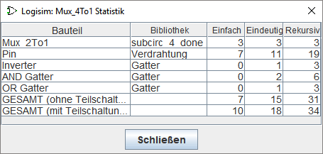

Das Projektmenü
- Schaltung hinzufügen...
-
Fügt eine neue Schaltung in das aktuelle Projekt ein. Logisim wird darauf bestehen, dass Sie einen Namen für die neue Schaltung angeben. Der Name darf nicht mit einer im Projekt vorhandenen Schaltung übereinstimmen.
- VHDL-Einheit hinzufügen...
-
--
- VHDL-Einheit importieren...
-
--
- Bibliothek laden
-
Laden Sie eine Bibliothek in das Projekt. Sie können drei Arten von Bibliotheken laden, wie an anderer Stelle im Benutzerhandbuch erklärt wird.
- Bibliotheken entfernen...
-
Entfernen Sie die aktuellen Buchhandlungen aus dem Projekt. Logisim erlaubt es nicht, die vom Projekt verwendeten Bibliotheken zu entladen, einschließlich der Bibliotheken mit Komponenten, die in den Schaltkreisen des Projekts erscheinen, sowie der Bibliotheken mit Werkzeugen, die in der Symbolleiste erscheinen oder mit der Maus abgebildet werden.
- Schaltung nach oben
-
Déplace le circuit actuellement affiché dans la liste des circuits du projet d'un niveau supérieur, comme indiqué dans la fenêtre d'exploration.
- Schaltung nach unten
-
Verschiebt den aktuell angezeigten Schaltkreis in der Liste der im Explorerfenster sichtbaren Projektschaltkreise um eine Zeile nach unten.
- Als Hauptschaltung festlegen
-
Definieren Sie den aktuell angezeigten Schaltkreis als Hauptkreis des Projektes. Dieser Menüpunkt wird ausgegraut, wenn der aktuelle Schaltkreis bereits der Hauptschaltkreis des Projekts ist. Hauptschaltkreis: Bedeutet einfach, dass er beim Öffnen des Projekts zuerst angezeigt wird.
- Schaltung entfernen
-
Entfernt den aktuell angezeigten Schaltkreis aus dem Projekt. Logisim verhindert das Löschen von Schaltkreisen, die als Unter-Schaltkreise verwendet werden und verhindert das Löschen des letzten Schaltkreises eines Projektes.
- Aussehen wiederherstellen
-
Wenn Sie das Erscheinungsbild der Schaltung verändert haben, kehrt dieser Menüpunkt zum Standarddesign zurück. Der Menüpunkt ist nur bei der Bearbeitung des Erscheinungsbildes der Schaltung aktiviert. Das Erscheinungsbild des Standarddesigns kann über die Eigenschaft Neues Aussehen der Bibliothek geändert werden.
- Schaltungslayout bearbeiten
-
Wechselt den Arbeitsbereich zur Anzeige der Schaltplanbearbeitung. Dieser Menüpunkt wird aktiviert, wenn der Arbeitsbereich den Erscheinungsbild-Editor anzeigt.
- Schaltungsaussehen bearbeiten
-
Ermöglicht es Ihnen, die Darstellung der Schaltung zu ändern, wenn sie als Teilschaltung in einer anderen Schaltung verwendet wird. Mit diesem Menüpunkt können Sie ein anderes Erscheinungsbild für den Subcircuit zeichnen. Ändert den Arbeitsbereich so, dass Erscheinungseditor. angezeigt wird.
- Schaltung analysieren
-
Hinweis: Dieses Menü kann in einigen Versionen von logisim-evolution deaktiviert werden. Sie kann durch Kommandozeilenoptionen wieder aktiviert werden.
Berechnet eine Wahrheitstabelle und boolesche Ausdrücke entsprechend der aktuellen Schaltung und zeigt sie im Fenster kombinatorische Analyse an. Der Analyseprozess ist nur für kombinatorische Schaltungen gültig. Eine vollständige Beschreibung des Analyseprozesses ist im Abschnitt Kombinatorische Analyse beschrieben. - Schaltungsstatistik ermitteln
-
Zeigt ein Dialogfeld mit Statistiken über die von der aktuell angezeigten Schaltung verwendeten Komponenten an. Der Dialog enthält eine fünfspaltige Tabelle:

- Bauteil: der Name der Komponente.
- Bibliothek: Name der Bibliothek, aus der die Komponente präsentiert wird.
- Einfach: die Anzahl, wie oft diese Komponente direkt in der angezeigten Schaltung erscheint.
- Eindeutig: Anzahl der Auftritte dieses Bauteils in der Schaltungshierarchie, wobei jeder Teilschaltkreis in der Hierarchie nur einmal gezählt wird.
- Rekursiv: Anzahl der Auftritte dieses Bauteils in der Schaltungshierarchie, wobei wir jeden Teilschaltkreis so oft zählen, wie er in der Hierarchie auftaucht.
Die Unterscheidung zwischen "Einfach" und "Rekursiv" ist einfacher zu erklären, wenn man den 4:1-Multiplexer betrachtet, der mit drei 2:1-Multiplexern aufgebaut ist, wie in Abschnitt User Sub-Circuits. Der 2:1-Multiplexer enthält zwei UND-Gatter (und die 4:1-Schaltung enthält keine), so dass die "eindeutige" Zahl, die die UND-Gatter zählt, 2 wäre; aber wenn Sie den 4:1-Multiplexer nach diesem Diagramm bauen würden, bräuchten Sie tatsächlich 2 UND-Gatter für jeden der drei 2:1-Multiplexer, so dass die "rekursive" Zahl 6 wäre.
Wenn Sie Schaltungen aus einer geladenen Logisim-Bibliothek verwenden, werden diese Komponenten als
"Black Boxes"
betrachtet: der Inhalt der Schaltungen der Bibliothek wird nicht in die eindeutigen und rekursiven Konten aufgenommen. - Optionen...
-
Öffnet das Fenster von Projektoptionen.
Nächste: Das Menü Simulieren.